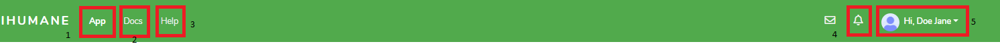
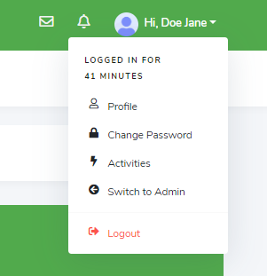
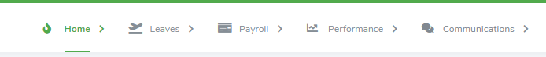
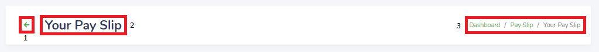
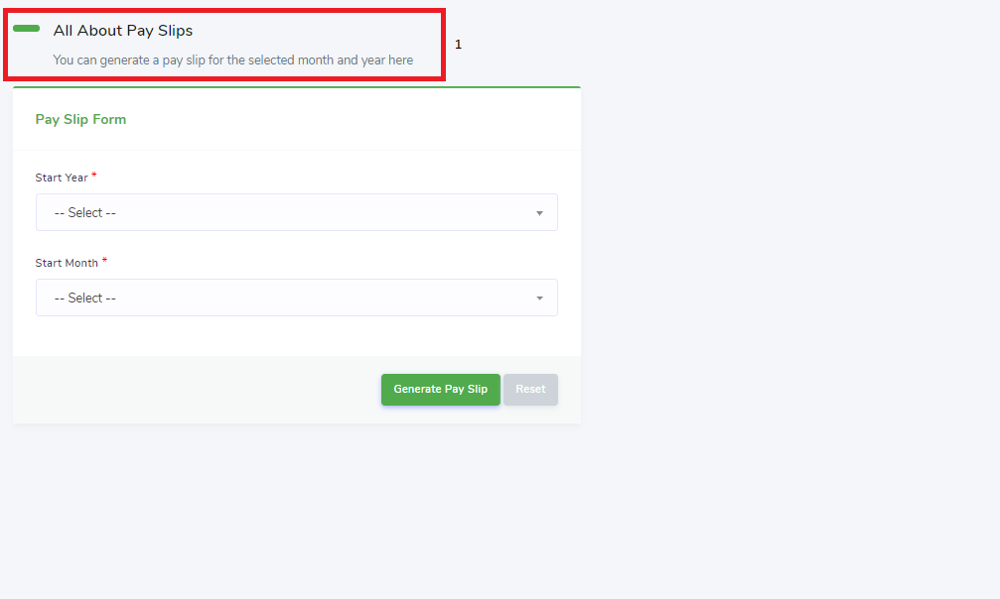
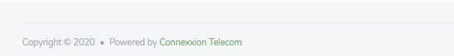

SSP Organization & Navigation
The SSP of the IH Web application is a browser-based interface that is used to perform employee tasks. The interface has the following parts:
Top Banner
The top banner (Figure 11), is across the top of the interface.
Figure 11: IH SSP Top Banner

The top banner has the following navigation controls:
- The app indicator switches the focus of the work area to the default IH Web application.
- The docs indicator switches the focus of the work area to the company documents view.
- The help indicator redirects the user to the IH support center.
- The notification icon which indicates unread notifications relevant to the current user. Clicking the notification icon will display the unread notifications. Clicking on any unread notification will display the related task in the work area.
- The quick action options for the current user. Clicking the quick action options will display the duration of the current user’s session and the following actions (Figure 12): profile, change password, activities, switch to admin (for Moderators), and logout.
Figure 12: IH SSP Quick Action Options

Top Menu
The top menu (Figure 13), which is immediately below the top banner, shows the tasks the user can perform.
Figure 13: IH SSP Top Menu

The top menu contains the following tasks and subtasks:
- Home
- Dashboard: view the SSP dashboard
- My Information: view personal information of the current user
- My Activities: view current user’s activities on the system
- Leaves
- My Leaves: view all leave applications from current user and initiate new leave
- New Leave: access form to apply for leave
- Payroll
- Pay Slip: access form to request pay slip for current user
- My Loans: view all loan applications for the current user, perform given actions on each loan, and apply for new loan
- New Loan: access form to apply for loan
- Performance
- My Appraisals: view all appraisals for current user to complete as employee and perform given actions on each appraisal
- Appraise Employee: view all appraisals for current user to complete as supervisor and perform given actions on each appraisal
- My Trainings: view all trainings assigned to current user and perform given actions on each training
- Resign: access form to apply for resignation
- Communications
- My Queries: view all queries for current user and perform given actions on each query
- Announcements: view all company announcements
- Directives: view all company directives for the current user
- Chat: access chat engagement platform
Task Bar
The task bar (Figure 14) is immediately below the top menu.
Figure 14: IH SSP Task Bar

The task bar has the following navigation controls:
- The return icon. Clicking the return icon will return the user to a preceding task view. This is true for all tasks or nested subtasks not listed in the top menu.
- The task name indicates the current task view being displayed in the work area.
- The breadcrumb trail shows the task views through which the user has navigated to reach the current task view in the work area. The last task view listed in the breadcrumb trail is the current task view in the work area. To return to any task view shown in the breadcrumb trail, click the task view title in the breadcrumb trail; the task view is displayed in the work area.
Work Area
The work area (Figure 15), which is located to the bottom of the task bar, is where your primary interaction with the Web application occurs. The interface has only one work area. To resize the work area, take the following action:
- Resize the browser window
Figure 15: IH SSP Work Area

The work area includes a hero message (1) that summarizes the task you are currently displaying (except for the AP dashboard task view), and the task to perform below the hero message.
The elements of the SSP and AP work areas are similar see the work area of the AP Organization & Navigation.
Bottom Banner
The bottom banner (Figure 16), which is located under the work area, displays copyright information for the IH Web application.
Figure 16: IH SSP Bottom Banner
